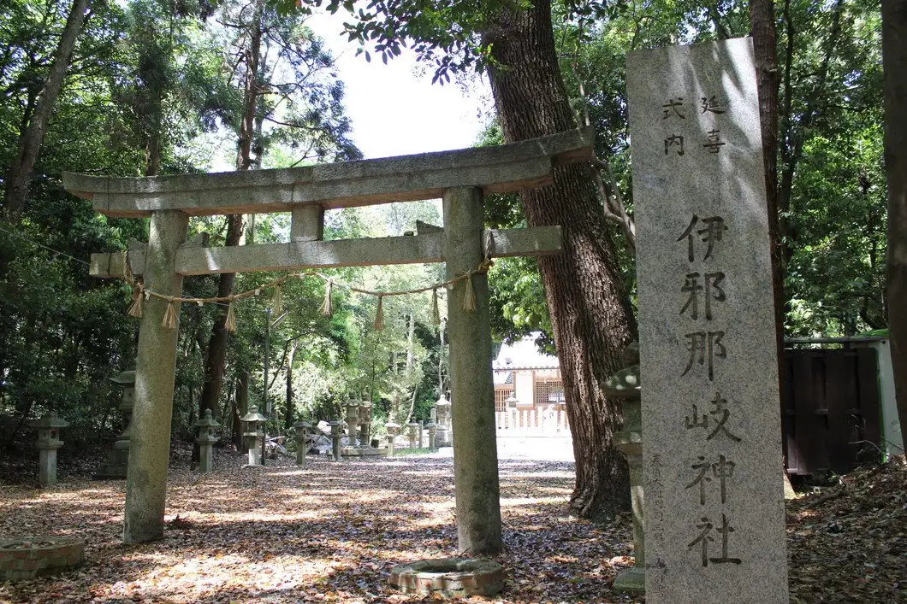
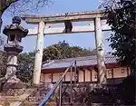
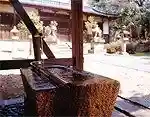
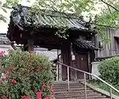
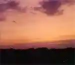

Japan / Nara / Kanmaki
Kanmaki · Nara
Kanmaki
Highlighted on the Nara map.

Kanmaki Town Hall
Izanagi Shrine
Kanmaki, Nara · Official / source link
Kasuga Shrine (Kanmaki)

Satoru Sho Shrine

Jo An Tera
Kanmaki, Nara · 0745-76-4353 · Official / source link

Kataoka Castle Ruins

Kifune Shrine
Nearby in Nara: ← Kamikitayama · Kashiba →
Other towns: Ando · Asuka · Gojo · Gose · Heguri · Higashiyoshino · Ikaruga · Ikoma · Kamikitayama · Kashiba · Kashihara · Katsuragishi · Kawai · Kawakami · Kawanishicho · Koryo · Kurotaki · Mitsue · Miyake · Nara · Nosegawa · Oji · Oyodo · Sakurai · Sango · Shimoichi · Shimokitayama · Soni · Takatori · Tawaramoto · Tenkawa · Tenri · Totsukawa · Uda · Yamatokoriyama · Yamatotakada · Yamazoe · Yoshino
All towns in Nara · Back to all prefectures